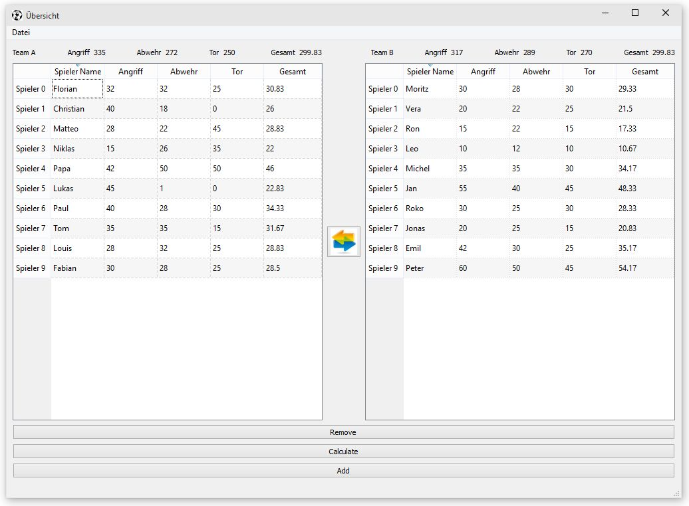

TeamGenerator_GUI module¶
Das Module TeamGenerator_GUI erzeugt das GUI (Graphical User Interface) für den Mannschaftsgenerator. Es wird PyQt4 benutzt. Das ist eine Qt4 Implementierung für Python3.
Das Programm hat verschiedene Windows:
1. Die Windows¶
Windows aus main:
#: Needed to start Qt app = QtGui.QApplication(sys.argv) #: Now loading the Qt Designer ".ui"-files and instanciating the user interfaces: welcomeWindow = uic.loadUi('./.GUI/welcomeWindow.ui') playerSelectWindow = uic.loadUi('./.GUI/playerSelectWindow.ui') waitingCalculation = uic.loadUi('./.GUI/waitingCalculation.ui') calculatedTeamWindow = uic.loadUi('./.GUI/calculatedTeamWindow.ui') #: To setup all the Qt models and Views of for each window one class is instanciated wcwin = welcomeWind() ctwin = calculateTeamWind(tgmA, tgmB) waitwin = waitingCalculationWind() pswin = playerSelectWind()
Es werden QWidgets mit dem QT Designer gemacht und mit uic.loadUi geladen.
Für weitere Informationen siehe: http://pyqt.sourceforge.net/Docs/PyQt4/qwidget.html#details
http://pyqt.sourceforge.net/Docs/PyQt4/qmainwindow.html#details
1.1 welcomeWindow¶

1.2 playerSelectWindow¶
1.3 waitingCalculation¶

1.4 calculatedTeamWindow¶
| Untermenü | Funktion | ||
|---|---|---|---|
|
generiert ein *json file mit den generierten Manschaften in .Result (TeamA.json; TeamB.json) | ||
|
generiert ein *json file mit den generierten Manschaften | ||
|
generiert ein *txt file mit den generierten Manschaften |
Qt Model-View-Programming¶
http://doc.qt.io/qt-4.8/model-view-programming.html
Model¶
Das Model ist die Schnittstelle über die ein View auf die Daten zugreift. Die Daten gehören nicht zum Model sondern zu einer anderen Klasse.
Wenn man die Daten in einer Tabelle darstellen will benutzt man am besten das QAbstractTableModel.
Ein Team hat ja eine Liste von playern und die sollen immer in einer Tabelle aufgelistet werden.
Das Model heist TeamGeneratorModel und implementiert QtCore.QAbstractTableModel.
Das Model regelt also wie und welche Daten im View dargestellt werden. Dazu muss mann verschiedene Methoden implementieren die vom View benutzt werden.
View¶
Für die Darstellung der Daten in Tabellen Form wird ein QTableView implementiert.
Proxy model¶
Für einen View ist ein Proxy model Objekt das gleiche wie ein Model. Der View kann über ein oder viele Proxy model auf das Grundmodel und darüber auf die die Daten zugreifen.
QtGui.QSortFilterProxyModel ist ein solches ProxyModel das verschiedene Sortierungen bereitstellt.
Table der verschiedenen benutzten Fälle:
data <–> model <–> proxy <–> view fullTeam.players <–> tgmF <–> proxyF <–> tableView_full teamA.players <–> tgmA <–> proxyA <–> tableView_A teamB.players <–> tgmB <–> proxyB <–> tableView_B
Gesammt sieht das dann zum Beispiel so aus:
#: Data of teamA.players is connected with the View tableView_A
#: in three steps:
#: teamA.players <--> tgmA
tgmA.ptableUpdate(tg.teamA.players)
proxyA = PlayerFilterProxyModel(tgmA)
#: teamA.players <--> tgmA <--> proxyA
proxyA.setSourceModel(tgmA)
#: teamA.players <--> tgmA <--> proxyA <--> tableView_A
playerSelectWindow.tableView_A.setModel(proxyA)
http://doc.qt.io/qt-4.8/images/modelview-models.png
{kind=link}

2. Qt¶
- Die Daten [tg.fullTeam.players] sind mit dem Daten Model [TeamGeneratorModel] verbunden und das Daten Model ist mit dem View [QtableView] verbunden.
- Daten <——> Model <——> View Daten <——> Model <——> Proxy <—-> , ... , Proxy <—-> View
Das Model regelt wie und welche Daten im View dargestellt werden. Dazu muss mann verschiedene Methoden implementieren die vom View benutzt werden.
Was Anderes¶
Created on Sat Feb 28 16:43:55 2015
@author: SohnyBohny
py:function:: enumerate(sequence[, start=0])
-
class
TeamGenerator_GUI.PlayerFilterProxyModel[source]¶ Bases:
PyQt4.QtGui.QSortFilterProxyModelJust inherited from the base class as it is
-
class
TeamGenerator_GUI.TeamGeneratorModel(ptable=[], parent=None)[source]¶ Bases:
PyQt4.QtCore.QAbstractTableModelModel to connect the data [the list of players of a Team] with AbstractTableViews
-
data(index, role)[source]¶ Return data from __ptable
Parameters: - index (QModelIndex) – model index
- role (QtCore.Qt.DisplayRole) – role
Returns: Table Cell Value
Return type: str/int/float
-
headerData(section, orientation, role)[source]¶ Defines the fixed column header
Parameters: - section –
- orientation (QtCore.Qt) –
Returns: Header - this is th title of each column
Return type:
-
insertRows(position, rows, parent=<PyQt4.QtCore.QModelIndex object at 0x00000000058A9198>)[source]¶ Insert rows at position :param position: Number of the first row, which is inserted :type position: int :param rows: Number of rows to be inserted :type rows: int :returns: True :rtype: bool
-
removeRows(position, rows, parent=<PyQt4.QtCore.QModelIndex object at 0x00000000058A9208>)[source]¶ Removes rows from the table
Parameters: - position – Number of the first row, which is removed
- rows (int) – Number of rows to be removed
Returns: True
Return type:
-
-
class
TeamGenerator_GUI.calculateTeamWind(tgModelA, tgModelB)[source]¶ Bases:
object-
getSelectedPlayers()[source]¶ Get the list currently selected indexes + table name
Returns: [ [List of selected players], ‘TableName’ ] Return type: [ [], str]
-
-
class
TeamGenerator_GUI.playerSelectWind[source]¶ Bases:
object-
getSelectedPlayers()[source]¶ Get the list currently selected indexes + table name
Returns: [ [List of selected players], ‘TableName’ ] Return type: [ [], str]
-
-
TeamGenerator_GUI.showMessage(message='')[source]¶ Pop-up of a simple message box
Params message: Text to display Message type: str Returns: